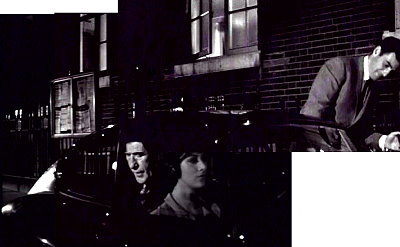
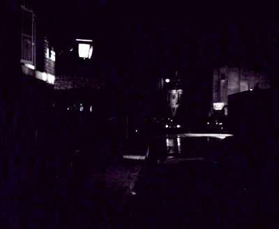
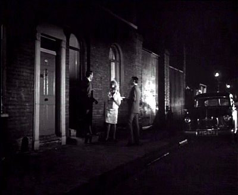
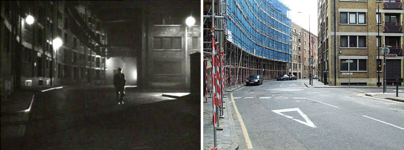
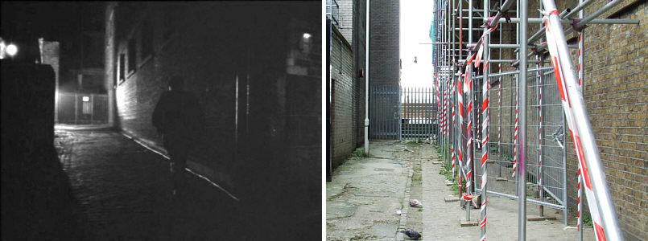
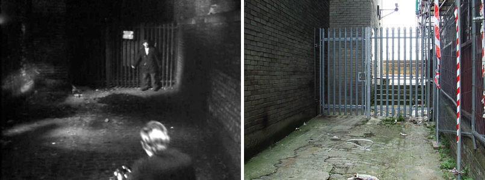
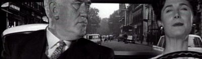
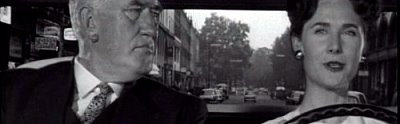
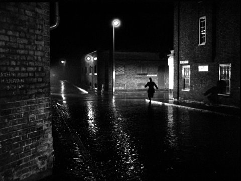
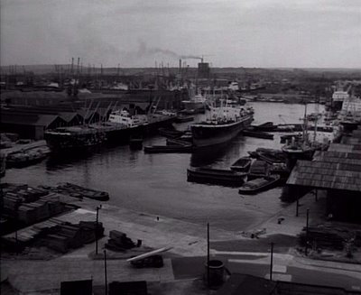

|
|
HELP FIND THE FOLLOWING LOCATIONS
PAGE 16
GIDEON’S WAY: The White Rat (Roy Baker, August 1964)
Bermondsey Wall West, SE16 – Establishing shot of

Unknown 1 – The West End Fur Co. – Mickey Keston (Ray McAnally) is robbing the factory with the help of Yob (David Gregory), After knocking out the watchman they make their escape in a van.


 Chicken
Inn 134 Marylebone Road, Dacea,
Chicken
Inn 134 Marylebone Road, Dacea,
(Identified by Alan Field, August 2007)

Wapping Police
Station, Wapping High Street, E1– Chief Inspector David Keen
(Alexander Davion)
takes Detective Sergeant Syd
Taylor (David Davies) to meet Mary Henderson (Susan Lloyd) who is parked in her
Jaguar outside the North East Division Police Station. The Sergeant squeezes
into the car before they drive off to Mickey’s party.
(Identified by Stephen Carter, September 2007)



Unknown 4 – Chief Inspector David Keen (Alexander Davion), Detective Sergeant Syd Taylor (David Davies) and Mary Henderson (Susan Lloyd) arrive at Mickey’s party.

Café (demolished),
corner of Brewhouse Lane and Wapping High Street, E1– After
leaving Mickey’s party Sergeant Syd Taylor (David Davies) takes Chief Inspector David
Keen (Alexander Davion)
and Mary Henderson (Susan Lloyd) to a local café. Yob (David Gregory) and Jean (Maggie
Wright) just happen to be passing the café on his bike when he sees Fingers
(Dermot Kelly) arrive and talk to
(Identified by Stephen Carter, September 2007)

Photo: Stephen Carter

Photo: Stephen Carter

Photo: Stephen Carter

Photo: Stephen Carter

Photo: Stephen Carter
Alley between Wapping
tube station and Gun Wharves,
Fingers (Dermot Kelly) is cornered by Yob (David Gregory). Yob
makes sure Fingers does not tell any more tales to the police.

Photo: Stephen Carter

Photo: Stephen Carter

Photo: Stephen Carter
Unknown 4 – Rose Lemman gives Detective Sergeant Syd Taylor a lift to division headquaters.



Town of Ramsgate
Public House, Wapping High Street, E1
Sergeant Syd Taylor (David Davies) peers into the window of a
local pub, suspicious that Mickey Keston is nowhere to be seen in his usual
Saturday night haunts.
(Spotted by Stephen Carter, September 2007)

Photo: Stephen Carter

Photo: Stephen Carter
Wapping Old Stairs,
E1
Rose Lenman (Virginia Maskell) with her suitcase becomes aware she
is being followed and turns left into an alleyway (Wapping Old Stairs).
(Spotted by Stephen Carter, September 2007)


photos:
Stephen Carter
Unknown 5 – A policeman comes running when he hears that shots that have been fire by Mickey.


 The
building in the foreground is Billingsgate Market.
The
building in the foreground is Billingsgate Market.
Unknown 4 – - Mickey Keston waits on a cargo ship at the docks for the boat to sail.


St. Katherine's Dock, E1 – After a tip-off from Yob, the police arrive in force to capture Mickey Heston who is waiting to sail to freedom.


Think you know a spot? Need a bigger image? Email me.
< Previous | Index | Avengerland | Next >
Copyright © 2003 Anthony R. McKay